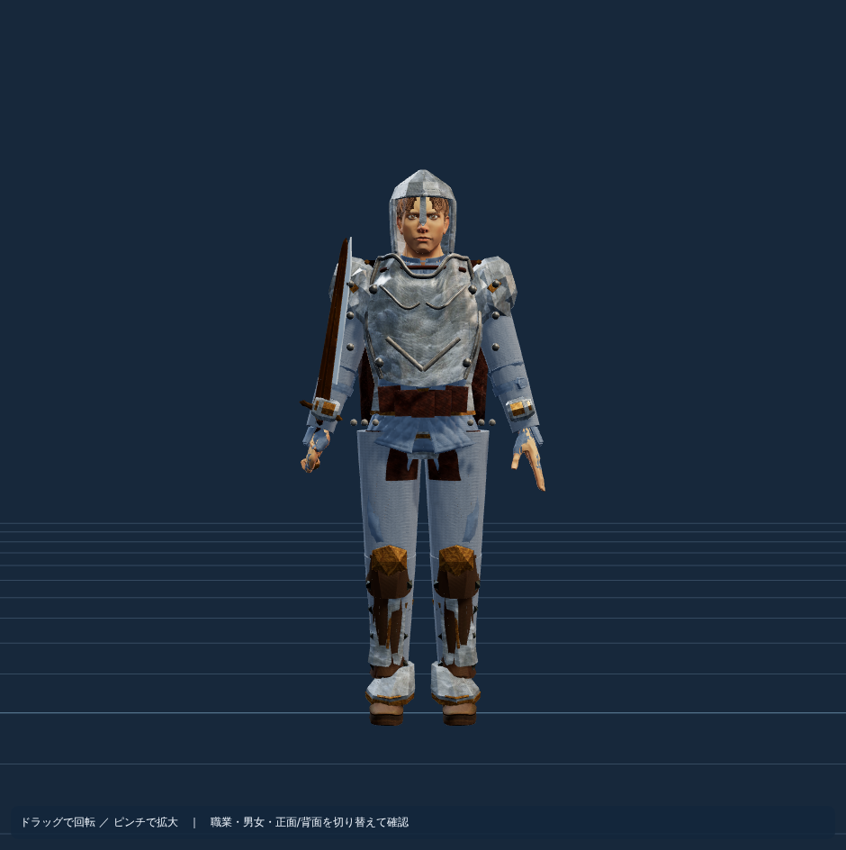

現行剣士（7頭身素体＋職業別衣装＋プレート鎧＋片手剣）を、実際のゲームと同じ衣装処理で撮影した画像を基準にします。AI側の候補は、AIサービスで生成したGLBを読み込んだ場合のみ表示します。生成済みと偽って既存素材を「AIモデル」にすることはありません。
比較する状態
角度
3DAI Studioで現行剣士を3D生成する
現在の画像を保存し、無料の 3DAI Studio（英語版） にアップロードしてください。まずは「鎧・衣装のみ」を選択して、人体とは別の装備GLBを作成するテストがおすすめです。
⚙️ 3DAI Studio自動生成（GitHub Actionsで「Run workflow」→「generate」）
画像アップロード・生成・GLB取得・候補登録を自動化しました。テクスチャ生成が無効な場合は品質確保のため生成せず停止します。1回の実行で最大1件のみ生成し、再試行・課金・アカウント制限回避は行いません。


サイト内では「Multi-view」（3面画像）→「Textured」（テクスチャ付き）→「Fine detail」（高精細）を優先。画像アップロード・Generate・GLBダウンロードはサイト上で行います。この画面から外部サイトへ自動送信はできません。
生成後、右側の「端末からAI生成GLBを読み込む」でファイルを選んで品質比較してください。無料サイトで生成されたモデルの商用利用条件は別途確認が必要です。
現行剣士（比較基準）

現在の剣士を実機レンダリングした参照画像を読み込んでいます。
外部3D生成AIの候補（未採用）
AI生成候補が未登録です。実際に生成したGLBを選択すると比較できます。
元の白モデルと鋼材仕上げを切替できます。UVがなければ比較用に自動生成します。
構造検査と見た目の良さは別です。関節・顔・髪・鎧の前後位置・背面・武器の握りを確認してから採用します。モデルはゲーム内に自動で投入されません。